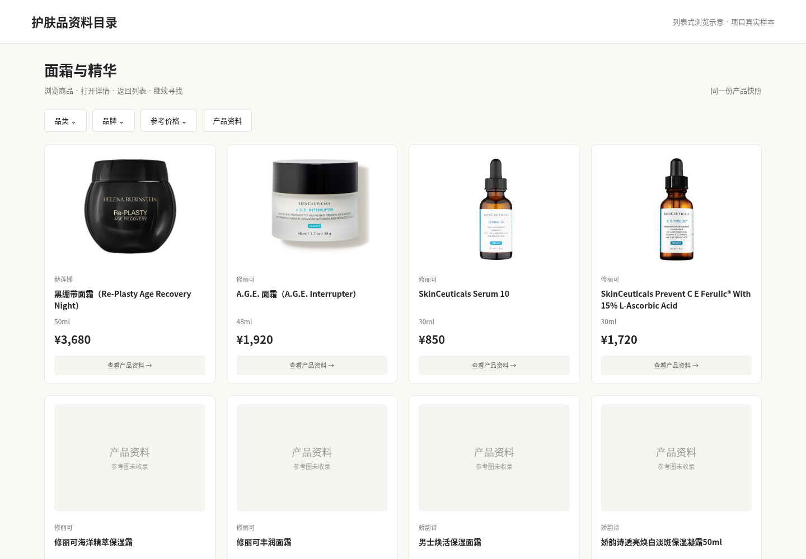
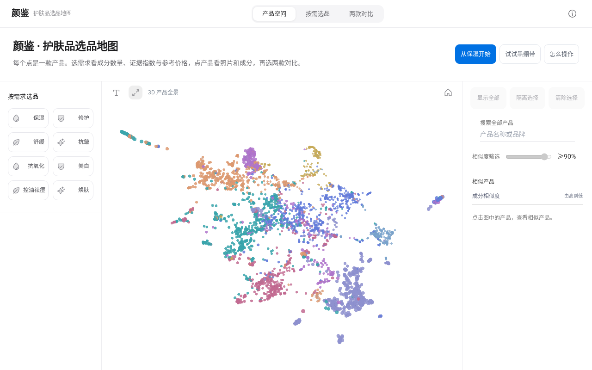
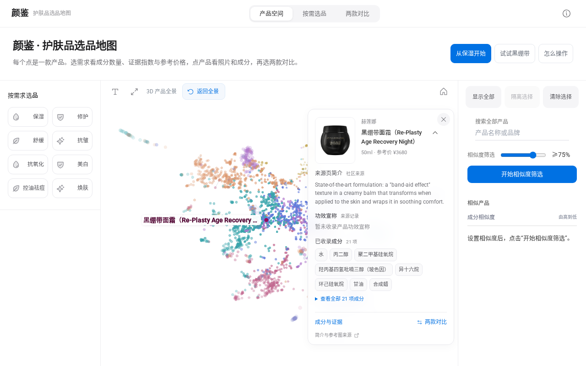
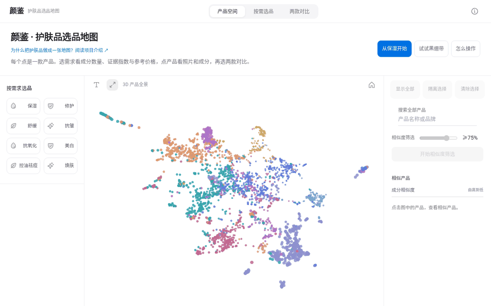
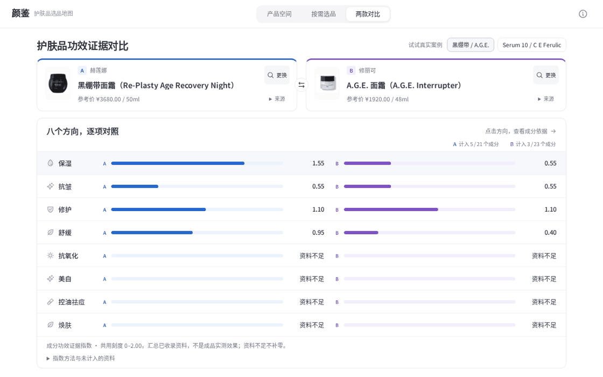

【欧莱雅美妆科技黑客松】颜鉴：把护肤品的成分、价格与证据放到一张地图上
在线体验：颜鉴｜护肤品选品地图
欧莱雅美妆科技黑客松 · 赛题二「信任守护师」参赛项目
“想挑一款保湿面霜，能不能先把几款产品的差异放在一起看？”
通常，这意味着打开一排商品页。记下这一款的价格，再去看另一款的成分；读完一段介绍，又回到列表寻找下一款。浏览过的产品逐渐增多，真正能放在一起比较的信息却留在不同页面里。
我们开发的颜鉴，希望把一次选品需要的信息组织到同一张地图上。
产品的成分表经过编码，成为空间中的点。用户先观察产品分布，再按保湿、修护等需求查看成分证据，结合参考价格形成候选，最后把两款放在同一尺度上比较。
这篇文章用三个具体任务介绍这套流程：从熟悉的面霜找相似产品、按保湿需求观察一批产品，以及比较黑绷带与A.G.E.面霜的成分差异。
1. 一次选品，需要哪些可以比较的信息？
手机可以比较芯片、电池和摄像头，汽车可以比较续航、动力和空间。这些参数给消费者提供了共同尺度：先说清自己关心什么，再看不同产品怎样满足需要。
护肤品也有可以整理的信息。成分表记录了配方列出的原料，规格与参考价对应购买成本，研究资料提供成分在不同功效方向上的依据。把这些信息连接起来，就能回答更具体的问题。
成分组成接近谁？
从一款熟悉的产品出发，寻找可以继续查看的候选。
保湿、修护等方向有什么差别？
把已收录成分与相应研究资料放在共同尺度上观察。
价格差异怎样理解？
对照整件参考价、规格和同单位单价，继续核对来源与日期。
最后两款具体差在哪里？
将共有成分、各自列出的成分和证据贡献并排展开。

同批真实商品制作的列表式浏览示意。用户需要逐款打开，再把价格、成分和介绍重新放到一起。
颜鉴把这些问题组织成一条选品路径：看分布、找候选、看差异、追来源。
2. 成分表怎样成为空间中的一个点？
先从一个基本问题出发：两款产品放在一起，究竟比较什么？成分表为每款产品提供了一组可以读取的原料名称。不同产品可能共享一些成分，也可能在原料组合上有明显区别。要同时观察几千款产品，需要先把这些长短不同的文本变成共同的数值表示。
第一步：把成分表整理成模型输入。
系统按记录中的成分顺序，将已匹配的名称串成一段文本，例如“一款化妆品的成分表：水、甘油、泛醇……”。产品地图中的成分编码使用这段成分文本，品牌、价格和产品宣传分别保存在资料字段中。
第二步：用千问8B嵌入模型，得到4096维表示。
项目使用Qwen3-Embedding-8B。8B表示模型约有80亿个参数；4096维则表示每款产品编码后得到4096个数，可以写成一个向量：v = [v₁, v₂, …, v₄₀₉₆]。这是向量结构示意，实际数值由模型计算。
模型先对成分文本分词，通过上下文编码得到隐层表示，再取最后一个有效词元的表示并进行L2归一化。这样，成分表长度不同的产品，也都能表示为相同长度的向量。4096个维度共同描述模型学到的文本特征；保湿、修护、价格等可读指标由各自的数据路径提供。
为什么这条路线适合探索产品关系？
相似产品的成分文本往往包含重复的原料名称和相近的组合信息。文本嵌入把这些信息转为数值，归一化后可以使用余弦相似度比较向量方向，形成可检索的候选关系。它将“打开几千份成分表逐一阅读”转成“先定位组成语义接近的记录，再展开具体成分与来源”的过程。
第三步：把4096维关系投影成可以浏览的三维地图。
我们用UMAP在高维向量中寻找局部邻域，再优化三维位置，使相邻记录尽量保持邻近；PCA作为另一种投影，沿整体方差较大的方向展开数据。每款产品最终得到三个显示坐标(x, y, z)，成为可以旋转、缩放和点击的一个点。
三维位置用来浏览关系，右侧相似产品列表继续使用原始4096维向量计算。旋转视角或切换投影时，检索使用的原始表示保持一致。

4096维成分向量经过降维，形成三维点云；每个点保留对应的真实产品ID。
打开页面时，点云从中心展开。用户可以先看整体，也可以搜索熟悉的产品，从一个具体对象开始探索。
3. 案例一：已经用过一款面霜，还能看看哪些产品？
以黑绷带面霜为例，在搜索框输入名称，或点击首页的示例入口，就能定位到对应记录。
点选后，资料卡展示产品照片、品牌、完整名称、已收录介绍和成分。画面保持原来的位置，周围产品按显示距离逐渐变淡，当前关注的对象更清楚。

先看产品资料，再按“开始相似度筛选”查看组成接近的候选。
接下来，用户设置相似度阈值，按“开始相似度筛选”。默认值为75%，筛选后的候选同时出现在局部球形范围和右侧列表中。修改阈值后，按“应用筛选”更新范围。
列表按照原始成分向量的余弦相似度排序。用户可以继续点开A.G.E.等候选，查看具体版本、成分与价格，再决定哪些值得放到一起比较。
这个任务把“我知道这一款”连接到“我还想了解哪些候选”，熟悉的产品由此成为探索入口。
4. 案例二：我想看保湿产品，可以从哪里开始？

实录动图：点击“保湿”，同一批产品从三维点云进入二维指标图。横轴为已收录成分数，纵轴为保湿成分功效证据指数。
选择“保湿”，产品进入二维功效平面。用户可以同时观察一批产品：已收录成分的数量怎样分布，保湿方向的证据贡献集中在哪里，哪些产品值得进一步点开。
换成修护、舒缓或抗皱，产品会先展开回三维点云，再进入目标需求平面。同一产品保持相同身份，纵坐标随所选方向的真实指数变化。
价格通过“三维价格”入口加入比较。用户可以旋转查看成分数、方向证据指数与人民币整件参考价；“未入图”列表则保留待补资料的记录，支持继续搜索和查看。
如果已经有明确预算，可以进入“比较参考价格”。这里按元/g与元/ml分组，使用整件参考价设置预算上限，同时保留品牌、品类和价格来源。用户把自己的购买条件放进去，再观察候选怎样变化。
5. 案例三：黑绷带与A.G.E.，具体有哪些不同？

实录动图：从产品信息向下浏览八方向指数、共有与各自成分、贡献明细和参考价格。蓝色A与紫色B采用相同刻度。
两款产品进入对比页后，品牌、名称、规格和参考价格并排显示。保湿、抗皱、修护、舒缓、抗氧化、美白、控油祛痘与焕肤八个方向，各有对应的成分证据贡献。
在这组产品记录的成分对照中，16项共有、5项仅A列出、7项仅B列出。用户可以先看差异，也可以展开完整成分表，逐项点开原料。
功效方向也能继续展开。点击“保湿”，两侧会显示贡献成分、所采用的证据权重与研究类别；再点成分，原始来源、研究场景和备注会出现在证据抽屉中。
比较因此可以落到具体内容：哪些成分相同，哪些各自列出，某个方向的资料由哪些成分贡献，判断依据来自哪里。
6. 相似检索与功效证据，分别怎样计算？
两条计算路径连接同一款产品。
成分相似：成分表文本 → 4096维向量 → 原始空间检索 → 产品地图与候选列表。
原始向量的余弦相似度用于排序，固定投影负责空间展示。预计算向量和索引可以在不同用户、不同查询之间复用，在线流程主要读取已有结果。
功效证据：成分研究记录 → 同成分、同方向取最高合格权重 → 汇总产品贡献 → 方向对照与来源明细。
成分功效证据指数表示已收录成分资料的贡献。成品表现还涉及浓度、配方与使用条件，相关信息随证据明细呈现，用户可以继续阅读研究对象和原文。
参考价格按具体版本、规格、来源和日期记录。二维功效图与三维价格图分别呈现当前满足资料条件的产品，图中的数值都能回到具体记录。
后端采用FastAPI与SQLAlchemy，前端采用React与Three.js，产品数据、检索索引和固定坐标来自一致的快照，地图与对比流程运行在ModelScope的CPU创空间中。
7. 当前版本提供了什么？
当前版本收录4,029条产品记录、3,749条真实成分向量。保湿二维图可呈现其中3,173条具有坐标与该方向证据的记录。页面展示实际入图数量，并保留其余记录的查看入口。
对消费者，它提供形成候选和查看差异的入口；对成分资料的读者，它把产品与原料研究连接起来；对开发者，它呈现了一条由成分编码、可视化与证据计算组成的应用流程。